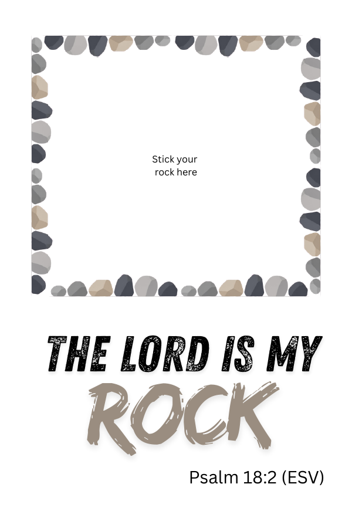
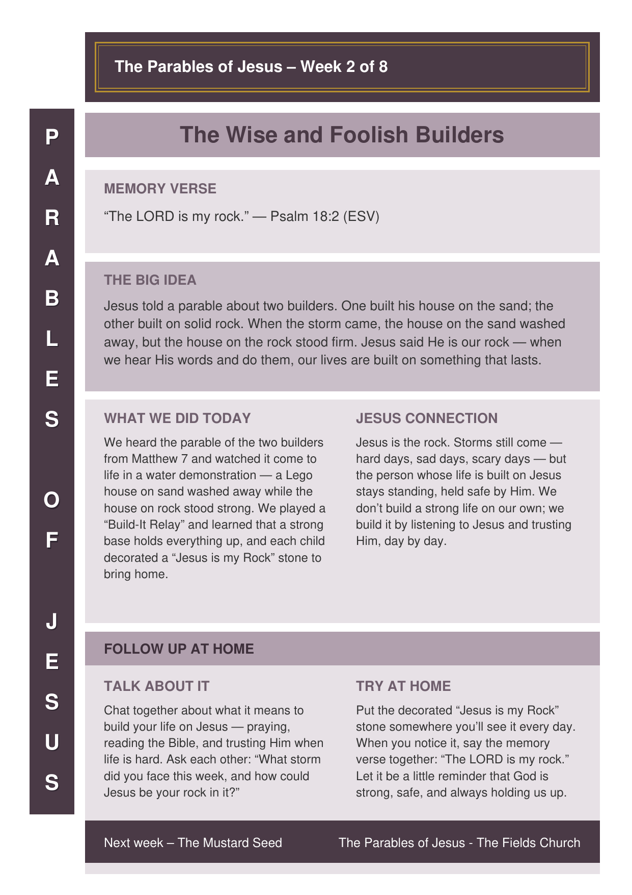

Welcome back! Last week we looked at the Parable of the Sower — the farmer scattering seed, and how God wants His word to grow deep roots in our hearts. This week Jesus tells another parable, this time about two builders. Get the children thinking about building and strong foundations before the story begins.
A fast, active relay to get everyone moving before the story. Two teams race to build the tallest cup tower they can — and the secret is a strong base, which sets up the parable we’re about to hear.
Setup
- Split the children into two teams. Each team sits in a line a short distance from its own pile of plastic cups on the floor.
- Both teams build their tower on the floor next to the cup pile.
- Have the Wise Man / Foolish Man song ready to play — the length of the song is how long they have to build.
Talk First – Build the Base
Before you start, have a quick chat: “To build a really tall tower, you need a strong base first. So don’t just stack straight up — start by putting a few cups in a line on the floor, then build up from there.” Keep that idea in mind — it’s exactly what today’s story is about!
How to Play
- Start the song. One child at a time runs to their team’s pile, takes one cup, and adds it to the tower.
- As soon as that child returns to the group, the next child takes their turn — fetch a cup and add it on.
- Keep the relay going for the whole song, building as high as they can.
- When the song ends, everyone stops. The team with the tallest tower still standing wins — and it’s the strong base that made it possible!
Bible passage: Matthew 7:24–27 (also Luke 6:46–49)
This week we tell the parable as we do a live demonstration. Build two little Lego houses before the session — one sitting on a tray of stones, one on a tray of sand — then pour water over each as the story reaches the storm. The sand foundation washes away; the rock foundation stands strong.
The Story – read aloud as you demonstrate
Stage directions are in [brackets]. Read the words in quotes aloud, and pause for the children to answer the questions.
“Last week we looked at the parable of the sower — the farmer who scattered seed, and how God wants His word to grow in our hearts. Well, Jesus told lots of parables, and here’s another one. This one is about two men who each wanted to build a house. Both of them wanted a strong, safe home to live in. But they picked very different places to build.”
“The first man was in a hurry. He found a lovely patch of soft, easy sand. ‘This will do!’ he said. It was quick and simple to dig, so he built his house right here on the sand.” [Set the first house on the sand.]
[Ask:] “Where did the first man build his house?” (Let them answer — the sand!)
“The second man was wise. He looked for the strongest place he could find — solid, hard rock. It was harder work, and it took him longer… but he wanted his house to last. So he built his house right here on the rock.” [Set the second house on the rocks.]
[Ask:] “And where did the wise man build his house?” (Let them answer — the rock!)
“Now… both houses looked good, didn’t they? On a sunny day you couldn’t even tell which one was stronger. But then something happened. A big storm came!”
[Ask:] “What happens in a storm?” (Let them call out — wind, rain, thunder!) “That’s right — the wind blew, and the rain came pouring, pouring down…”
“Watch what happens to the house on the sand… Oh no! The sand is turning to mud… it’s sliding… it’s washing away! And the house is falling doooown!” [Let it topple/sink.]
[Ask:] “What happened to the house on the sand?” (Let them answer — it fell / washed away!) “It couldn’t stand up in the storm.”
“Now let’s see the house that was built on the rock. Here comes the same wind, the same rain, pouring down… and look — the rock doesn’t move! The water runs away and the house stays standing, strong and safe.” [Hold up the standing house.]
[Ask:] “What happened to the house on the rock?” (Let them answer — it stayed up / stood strong!)
[Bring it home, simply.]
“Jesus told us this story about more than just houses. Jesus said He is like the rock. When we listen to Jesus and do what He says — when we trust Him — it’s like building our life on the strong, solid rock. Then when hard days come, or scary days, or storms in our life, we don’t have to be afraid, because we are safe with Jesus holding us up.”
[Ask:] “So who is our strong, safe rock?” (Let them answer — Jesus!)
“Our memory verse says it: ‘The LORD is my rock.’ Jesus is the strongest, safest place of all. So let’s build our lives on Him.”
Jesus Connection: The wise builder chose the rock, and his house stood firm through the storm. Jesus tells us that He is our rock: when we hear His words and do them, we are building our lives on something that will never wash away. Storms still come — hard days, sad days, scary days — but the person who is built on Jesus stays standing, held safe by Him. That’s why we can say with the psalm, “The LORD is my rock.”
🙏 Prayer
Dear God, thank you that You are our rock — strong and safe, never moving. Help us to listen to Jesus and do what He says, so our lives are built on You. When storms come, remind us that we don’t have to be afraid, because You are holding us up. Thank You for Jesus, our forever rock. Amen.
Each child decorates a real stone with coloured markers and sticks it onto a verse card to take home — a solid little reminder that Jesus is our rock.
Before the Session
- Collect a smooth, flat-ish stone for each child (big enough to decorate, small enough to stick on a card).
- Print the verse cards (below) onto stiff card, one per child, and have strong glue (PVA or a glue dot) ready.
- Set out coloured permanent markers and cover the table.
Materials (per child)
- One smooth stone
- Coloured permanent markers
- A printed “Jesus is my Rock” verse card (on stiff card)
- Strong glue or a glue dot
Steps
- Decorate the stone however you like with the coloured markers — the older children could add the word “ROCK” or a cross.
- Say the memory verse together while everyone finishes decorating.
- Stick the decorated stone onto the verse card, in the space marked “Stick your rock here”.
- Take it home and put it somewhere it will be seen — a reminder that the LORD is our rock.
“Jesus is my Rock” Verse Cards
Print on stiff card, one per child. Each card has the memory verse (Psalm 18:2) and a marked box to stick the painted stone.

Print one per child to send home. Preview below — use the button to download the printable sheet.
